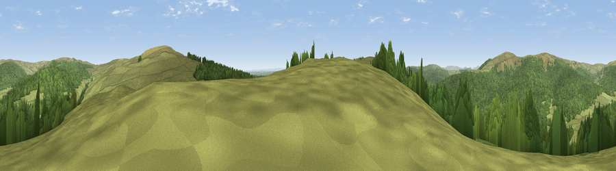

Viewpoint c11904_7330
#17825 in England · top 37% of its area beats it · —The view, rendered

A 360° render of this exact spot computed from the terrain model, tree cover and land cover — summer colours, afternoon light, calibrated against photographs of famous viewpoints. Real trees, hedges and buildings will differ in detail.
The panorama
Grey silhouette: terrain skyline in each direction (720 bearings, Earth curvature and refraction included). Dashed green: skyline with trees (+15 m) and buildings (+8 m) as obstacles. Blue strip: how far the ground is visible on each bearing.
Where the view opens
Wedge length = distance to the farthest visible ground on that bearing (vegetation-aware). Rings at 10, 25 and 50 km.
What fills the view
54% woodland · 46% grassland
Angular shares of the visible panorama (visual magnitude), not map area. Landscape diversity 0.30 (0–1 Shannon).
Key numbers
More beautiful places nearby
The staircase of upgrades: each row has a higher view potential than everything closer. Driving times are estimates from straight-line distance, calibrated against real road routing — check an actual route before setting out.
| Place | Direction | Drive | Score |
|---|---|---|---|
| Pike Knowe | SW · 1 km | ~3 min | 71.2 |
| Monkside | E · 2 km | ~5 min | 78.4 |
| Deadwater Fell | WNW · 4 km | ~10 min | 79.4 |
| Viewpoint c11995_7247 | NW · 6 km | ~13 min | 82.1 |
| Viewpoint c12273_7856 | NE · 32 km | ~50 min | 83.7 |
| Viewpoint c12396_7887 | NE · 37 km | ~56 min | 85.7 |
| Viewpoint near Kirknewton | NE · 43 km | ~63 min | 86.1 |
| Viewpoint near Chillingham | NE · 51 km | ~73 min | 88.1 |
55.25006, -2.52812 · source: screening · position refined by local search. Computed location — check access rights before visiting.